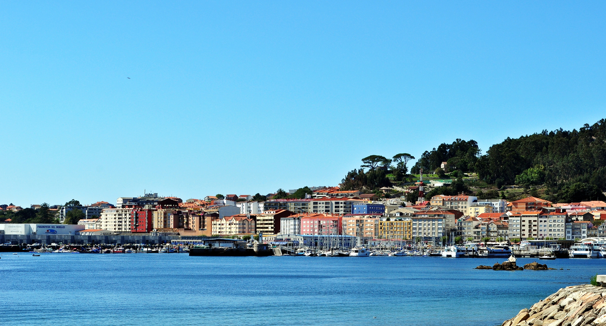

Vigo es un municipio y una ciudad que pertenece a España, que se situa en la provincia de Pontevedra, comunidad
autónoma de Galicia. Es el municipio más poblado de Galicia y el decimocuarto en España. Se encuentra en una zona
que pertenece a las Rías Baixas y limita con los municipios de Redondela, Mos, Porriño, Gondomar y Nigrán.
Tiene uno de los puertos más importantes de nuestro país. Tiene un casco con monumentos históricos, museos interesantes,
esculturas pintorescas y obras de arte urbano, varios espacios verdes llamativos
Lugares de interés
Fortaleza de O Castro:
O Castro es el parque con las mejores vistas de Vigo cerca de la ría. Es un monte,
que es el punto de origen de la ciudad,
es el mayor parque del centro de la ciudad, a un paso de las calles más comerciales y las zonas administrativas o residenciales. A lo largo de
los senderos de O Castro disfrutaremos de este parque botánico, de su historia y sus bonitas vistas.
Se situa en el centro de la ciudad y es lo que hace que se puedan disfrutar de sus vistas
Islas Cies:
Las Islas Cíes es uno de los destinos turísticos más visitados en Galicia,
las Islas forman parte del Parque Natural marítimo-terrestre de las Islas Atlánticas
de Galicia. Las Islas Cíes fueron declaradas Parque
Natural en 1980 e incluidas en el Parque Nacional M-T de las Islas Atlánticas de Galicia creado en el año 2002, junto a
la Isla de Ons, la isla de Sálvora y la de Cortegada.

Casco Vello
El casco antiguo de la ciudad de Vigo se le conoce como Casco Vello, y es recomendable de
visitar en nuestro viaje a la ciudad gallega. Un paseo por sus encantadoras calles es como un viaje en el tiempo, ya que
te sumerges en una arquitectura renacentista que se encuentra en el corazón de Vigo
lo que realmente destaca en esta zona son los hermosos frescos que adornan las fachadas de los edificios
Además, descubrirás un mirador desde el cual puedes contemplar el puerto de la
ciudad. También encontrarás una gran variedad de tiendas, locales y antiguas tabernas.
Monumento a los Caballos
El Monumento a los caballos es una escultura de bronce de Juan Oliveira del 1991 está situado en la ciudad de Vigo.
Se encuentra en medio de la glorieta de la plaza de España,donde hubo una fuente con iluminación de
distintos colores
Monte de A Guia
A Guía es el monte que vigila el mar de Vigo. Antiguamente, el monte de A Guía era el lugar elegido por las esposas de
los marineros vigueses para encender hogueras que les sirvieran de faro para volver a casa. El monte está situado en la
parte alta del barrio de Teis, uno de los más activos de la ciudad. El parque está presidido por la ermita de A Nosa
Señora das Neves y toda la zona es un enclave natural impresionante, por el que es posible pasear escuchando solo el
sonido del mar.
Estadio Municipal de Balaidos
El Estadio de Balaídos, conocido como Abanca-Balaídos por motivos de patrocinio,6 es un recinto deportivo
de titularidad municipal, situado en la ciudad de Vigo, España. Alberga los partidos como local del primer
equipo del Real Club Celta de Vigo.
Fue inaugurado el 30 de diciembre de 1928 y actualmente cuenta con un aforo de 24791 espectadores debido a
las obras de reforma-7 y tras la apertura de la nueva grada de Marcador en 2023[1] . Una vez finalizada la
remodelación del recinto se prevé que su aforo final oscilará en torno a los 27000 espectadores
aproximadamente. Fue una de las diecisiete sedes del Mundial de España 1982, habiendo acogido tres
encuentros. Además ha albergado siete partidos de la selección española.8
Puerto de Vigo
Dar un paseo por la zona del puerto deportivo y recorrer un tramo de la Avenida Beiramar para ver también una parte del
puerto pesquero, uno de los más grandes del mundo.
Además de ver los barcos de recreo y algún lujoso yate, en el puerto deportivo puedes observar esculturas
como la del Emigrante, el Bañista del Arenal, el Nadador y sobre todo, el Monumento a Julio Verne.
Playas mas visitadas:
Playa de Samil
La playa de Samil se encuentra en la costa suroeste de la ciudad de Vigo, se puede visitar en coche, Transporte publico o incluso
andando desde el centro de la ciudad, es una playa bastante extensa, con una arena fina y dorada, es una de las playas mas
importantes de Vigo, cuenta con bastantes instalaciones, aseos, vestuarios, bares y restaurantes y en frente de la playa
construyeron un gran hotel para disfrutar desde la habitacion las vistas al mar
Playa del vao
Playa del Vao, se encuentra en la costa oeste de la ciudad de Vigo, es una de las bonitas playas de Vigo, al igual que la playa de
samil, está una de la otra bastante cerca, se puede acceder en coche, transporte publico e incluso andando, es una playa de tamaño medio
.Es conocida por sus aguas cristalinas se puede disfrutar de actividades como surf, windsurf etc. Esta playa incluye un paseo maritimo
la cual puedes pasear por la playa con vistas al mar, tiene tambien restaura y bares.
Playa de Rodas
Es una de las playas más famosas y espectaculares de Galicia y se encuentra en las Islas Cíes, que es un pequeño archipiélago
situado en la costa noroeste de España, en la provincia de Pontevedra, Galicia.
Sus aguas son cristalinas y tienen un color azul turquesa que se asemeja a las playas tropicales

Playa de Melide
Es una de las playas más bonitas y espectaculares para disfrutar de los días de sol. Está situada en el
municipio de Cangas y se conoce como Cabo Home. Además, está prácticamente enfrente de las Islas Cíes por lo que las
vistas en el horizonte son igual de espectaculares propias de las rías baixas
Playa de Figueiras
Esta playa se asemeja más al aspecto de una cala o de varias calas continuadas, ya que no tiene esa vista y
amplitud de las anteriores. Sin embargo, la belleza de esta playa de Vigo es espectacular. Su arena fina y blanca,
sus aguas azules y cristalinas dibujan una imagen paradisÍaca que invita a disfrutar de la naturaleza gallega
Playa de Rodeira
Esta playa bañada por la Ría de Vigo se encuentra en la Punta Rodeira. De arena dorada y fina y aguas muy tranquilas
resguardadas de mar abierto, se dice que en sus orillas se reunían mujeres para realizar ritos de brujería. Estas
leyendas hacen de Cangas un lugar de historias místicas.
